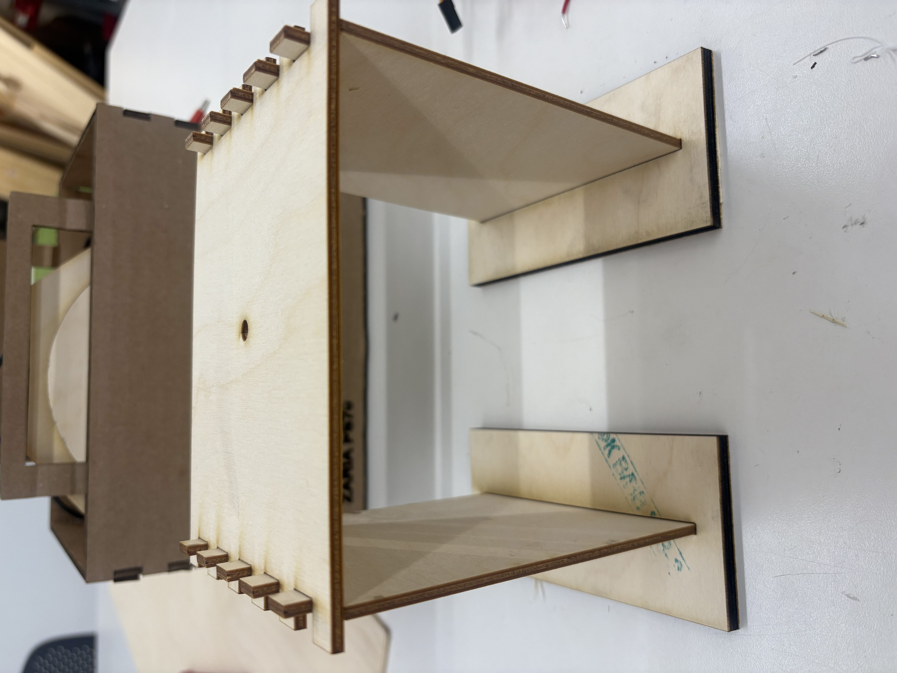
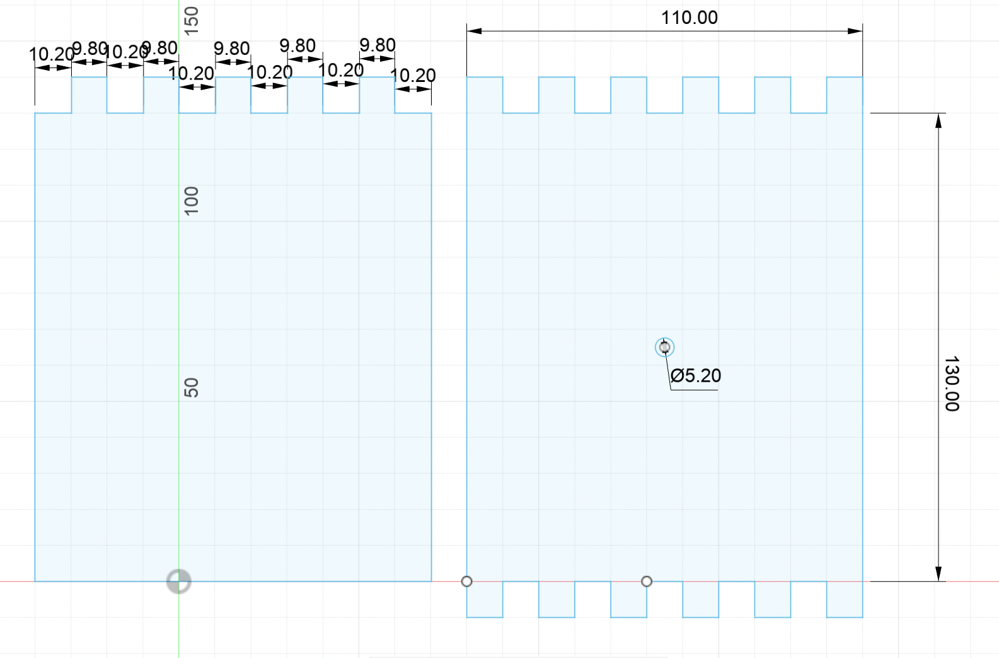
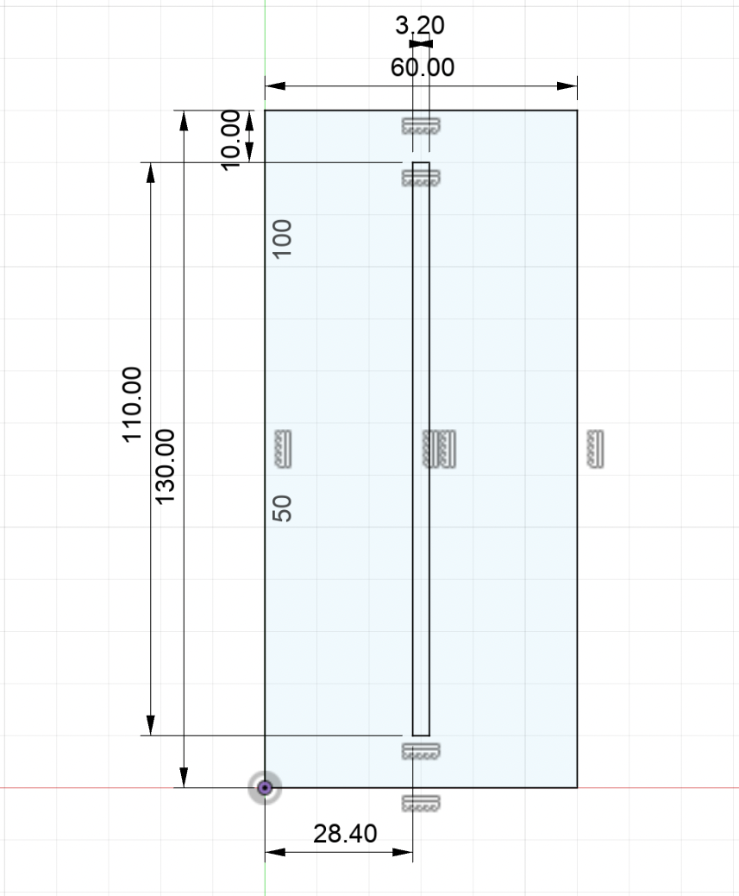
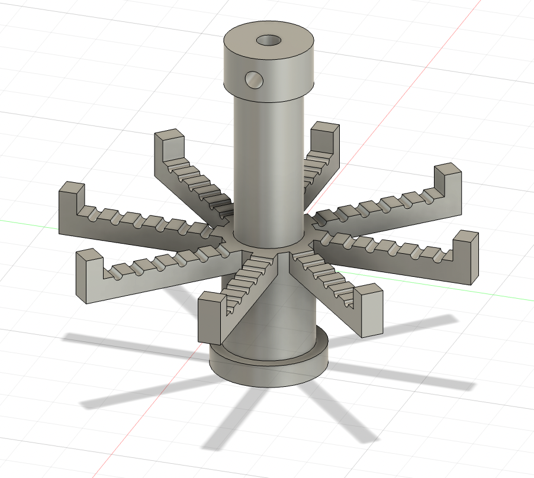
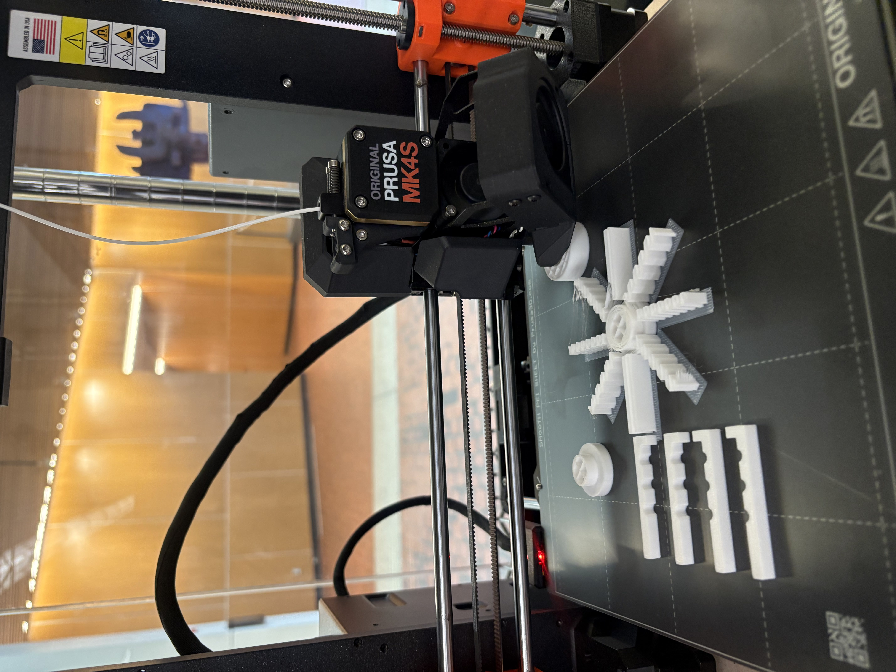
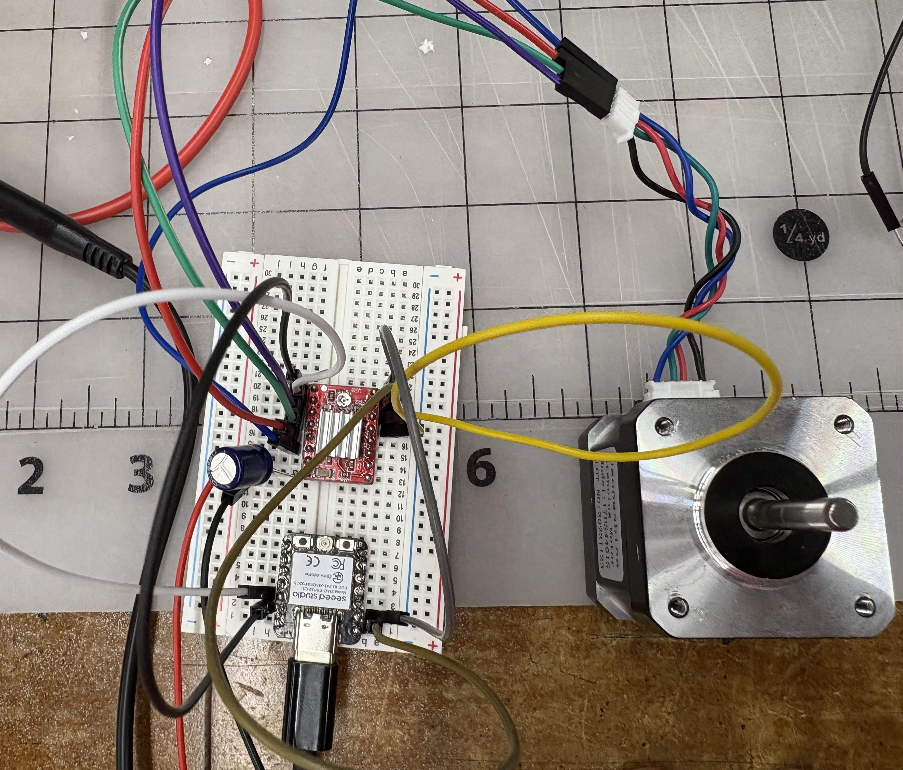
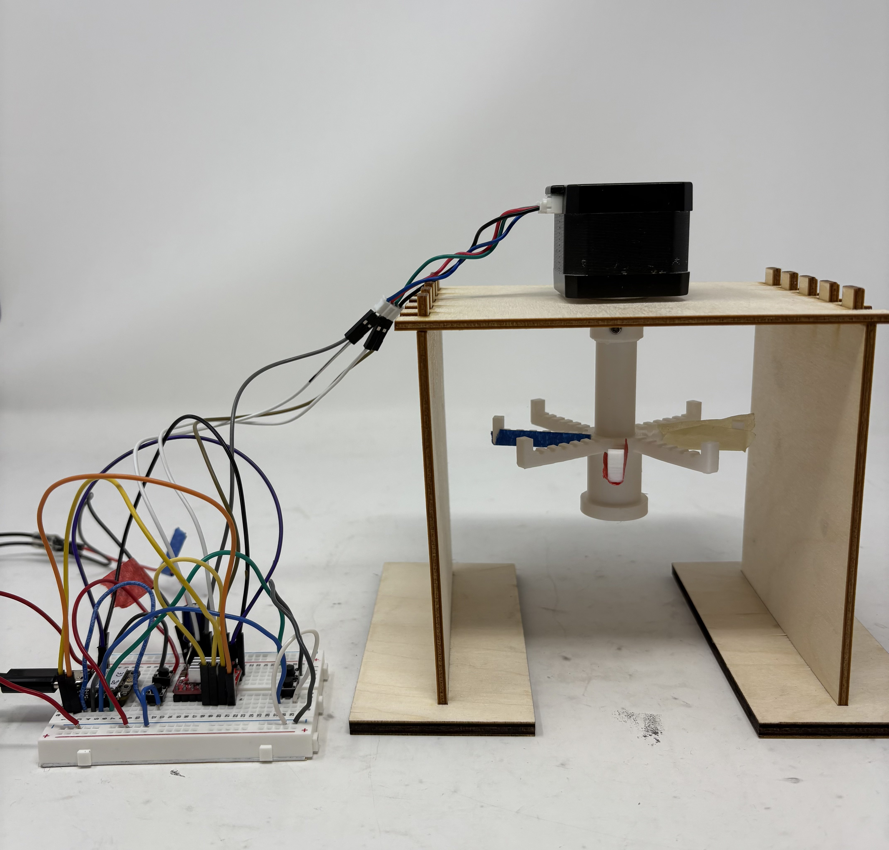
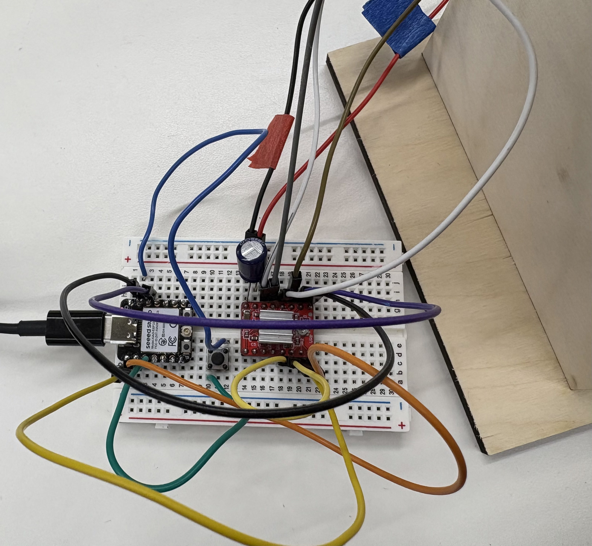
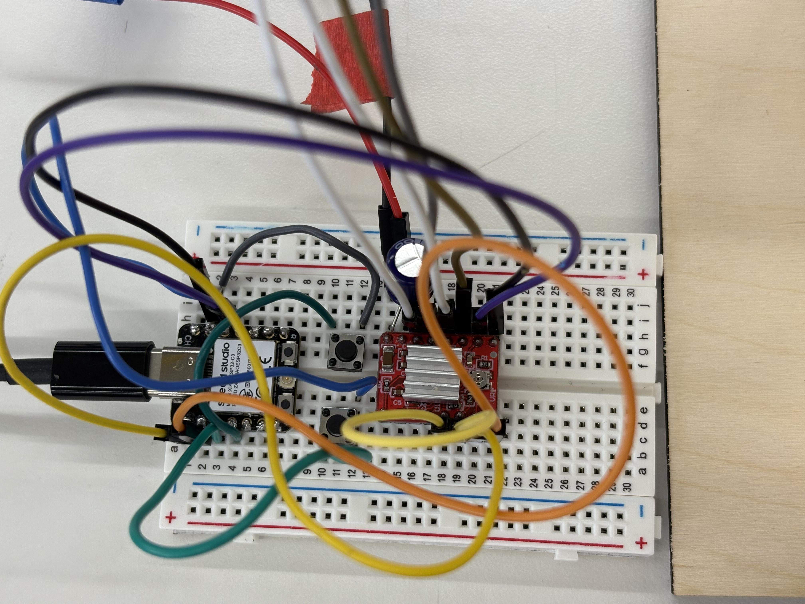

<div class="textcontainer">
<p class="margin"> </p>
<h3>Week 7: Electronic Outputs</h3>
<h4>Assignment: Minimum Viable Product for Final Project</h4>
<p> My final project is an automated jewelry stand with spinning hooks that rotate to present the desired piece of jewelry. For my MVP, I focused on developing the spinning mechanism to determine the workflow for selecting a specific necklace. </p>
<br></br>
<video width="640" height="480" controls>
<source src="fourbuttonvid.mp4" type="video/mp4">
</video>
<p> Materials used: </p>
<p> Wood </p>
<p> 3D print</p>
<p> Electronic components: </p>
<p> 1 stepper motor </p>
<p> 4 buttons </p>
<h3><strong>Wooden Frame</h3></strong>
<p></p>
<p> I designed the frame components in Fusion360 and then used the laser cutter to cut the pieces from wood. I assembled the pieces together with supper glue. Here are the dimensions I used: </p>
<p></p>
<p></p>
<p> For final fabrication, I intend to use acrylic panes to give the stand a cleaner and more polished finish. </p>
<h3><strong>Spinning Hooks</h3></strong>
<p> I designed the spinning hooks in Fusion360 for assignments in prior weeks. This week, I updated the initial model by adding a hole at the top for mounting the stepper motor and a side screw hole to secure the spinning piece during rotation. </p>
<p></p>
<p> 3D printed Parts </p>
<p></p>
<img src="./week7-placeholder-image.jpg" alt="Final print pic" style="width:500px">
<h3><strong>Stepper Motor Setup</h3></strong>
<p> I connected the stepper motor following the tutorial on Pololu’s website: https://www.pololu.com/product/1182 </p>
<p></p>
<p><strong> All the parts assembled together: </p></strong>
<p></p>
<h4>Arduino Code</h4>
<p> Developing the workflow for the spinning hooks seemed to be the most tedious part of the process. I first started by just getting the hooks to spin. </p>
<br></br>
<video width="640" height="480" controls>
<source src="spinning.mp4" type="video/mp4">
</video>
<p> I then incorporated a button as a basic user interface to stop the hooks. Here is the code: </p>
<p></p>
<br></br>
<video width="640" height="480" controls>
<source src="onebuttonvid.mp4" type="video/mp4">
</video>
<p> To improve precision, I implemented code that will track the current position (the current orientation of hook) and target position (where I want it to spin to). This gave me a little more control over where I wanted specific hooks to stop, enabling selection of a specific hook (or desired jewelry). I added coloured tape on every other hook to get better visibility as to how to the hooks were spinning. I tested workflows with both two-button and four-button configurations to evaluate user interaction. </p>
<p> Here is the workflow with two buttons: </p>
<p></p>
<br></br>
<video width="640" height="480" controls>
<source src="twobuttonvid.mp4" type="video/mp4">
</video>
<p><strong> Here is the code for the 4 button interface: </p></strong>
<pre class="pre prettyprint">
<code class="language-cpp code">
const int stepPin = D0;
const int dirPin = D1;
const int buttonAPin = D2;
const int buttonBPin = D3;
const int buttonCPin = D4;
const int buttonDPin = D5;
int targetPos = 0;
int currentPos = 0;
int stepDist = 10; // 4 arms
void setup() {
// set 2 pins as output
pinMode(stepPin, OUTPUT);
pinMode(dirPin, OUTPUT);
pinMode(buttonAPin, INPUT_PULLUP);
pinMode(buttonBPin, INPUT_PULLUP);
pinMode(buttonCPin, INPUT_PULLUP);
pinMode(buttonDPin, INPUT_PULLUP);
}
void loop() {
// digitalWrite(dirPin, LOW); // tells the motor to spin in a certain direction
// reads input from button and modifies targetPos
int pressedA = digitalRead(buttonAPin);
if(pressedA == LOW) {
targetPos = 2;
}
int pressedB = digitalRead(buttonBPin);
if(pressedB == LOW) {
targetPos = 4;
}
int pressedC = digitalRead(buttonCPin);
if(pressedC == LOW) {
targetPos = 6;
}
int pressedD = digitalRead(buttonDPin);
if(pressedD == LOW) {
targetPos = 8;
}
if (currentPos != targetPos){
if (targetPos > currentPos){
int numSteps = (targetPos - currentPos)*stepDist;
digitalWrite(dirPin, LOW);
for (int i = 0; i < numSteps ;i++){
digitalWrite(stepPin, HIGH);
delay(8);
digitalWrite(stepPin, LOW);
delay(8);
}
} else{
//if (targetPos < currentPos){
int numSteps = (currentPos - targetPos)*stepDist;
digitalWrite(dirPin, HIGH);
for (int i = 0; i < numSteps ;i++){
digitalWrite(stepPin, HIGH);
delay(8);
digitalWrite(stepPin, LOW);
delay(8);
}
}
currentPos = targetPos;
}
}
</code>
</pre>
<p> Here is the final workflow with four buttons </p>
<br></br>
<video width="640" height="480" controls>
<source src="fourbuttonvid.mp4" type="video/mp4">
</video>
<h4> *Time Domain Left to do* </h4>
<p> *Use an oscilloscope to discover the time domain at which your output device is operating. Is it on a fixed clock? What's its speed? Share images and describe your findings.* </p>
<h4><strong> Next Steps </h4></strong>
<p> I will incorporate magnets and Hall sensors to establish a zeroed reference position when the parts are assembled. </p>
<p> I will do more precise calculations to determine the best value of stepDist in my code, improving the accuracy of selecting a specific hook. </p>
<p> I will integrate a rotary encoder and a screen that allows the user to select a specific hook or piece of jewelry, with the spinning mechanism rotating directly to the chosen item. </p>
</div>